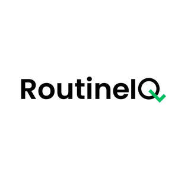

Trade Mark Journal No.2025/027 4 July 2025
UK00004222354 20 June 2025 (9,16,21,35)

- Class 9
- Software embedded in QR codes for accessing digital reminders and behavioural prompts; Downloadable mobile applications; Mobile apps; Downloadable software; Computer application software; Mobile application software; Downloadable computer software.
- Class 16
- Printed materials for promoting and supporting personal habit formation, wellness tracking and lifestyle improvement; Planners [printed matter]; Reference cards; Printed plans; Instructional manuals; Instruction manuals; Manuals; Guide books; Journals.
- Class 21
- Non-electric containers and organisers for dispensing water or medication to pets; Reusable bottles; Water bottles; Drinking vessels; Containers for beverages; Pill boxes for personal use; Pill organizers for personal use; Household containers.
- Class 35
- Online retail services relating to reusable water bottles, drinking flasks, drinking vessels, pill organisers, non-electric containers for personal use, printed planners, digital planners, printed journals, digital journals, downloadable software applications, and mobile applications; business consultancy services relating to the development, marketing, and sale of hydration products, habit-tracking tools, health and productivity planners, and related consumer goods; online advertising services and online marketing services for hydration products, pill organisers, habit-tracking tools, planners, journals, and productivity software.
Jonathan Girvan